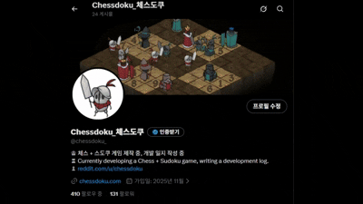
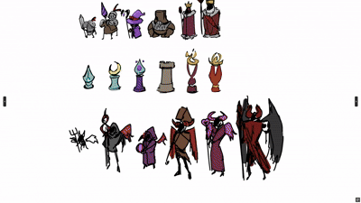

게임플레이 화면

SNS 마케팅 자료

체스말 이미지
PM 역할을 중심으로 게임 기획, 마케팅 전략 수립, 멀티플레이 설계를 주도하며 사업성과 시장성을 기반으로 한 전략적 프로젝트 관리 경험을 쌓은 프로젝트
게임플레이 화면
SNS 마케팅 자료
체스말 이미지
출시를 목표로 하되, 개발 과정에서의 학습과 경험을 최우선으로 두었습니다. 특히 마케팅 전략 수립, 멀티플레이 구현, 수익화 모델 설계 등 상업적 게임 개발의 전 과정을 경험하는 것을 핵심 목표로 삼았습니다.
체스 + 스도쿠라는 누구나 아는 게임으로 접근성 확보. Reddit 커뮤니티 분석 결과 r/chess (1.8M), r/chessbeginners (361k), r/sudoku (48k)로 약 2.2M의 타겟층 확인.
PC (Steam)는 유료 판매 + DLC (기물/맵 스킨) + 시즌 패스로 구성하고, Mobile (Android)는 배너/보상형/전면 광고와 인앱 결제 (스킨, 배틀패스)로 설계.
Unity NetCode for GameObjects로 멀티플레이 완성. P2P 방식으로 서버 비용 최소화하고, Unity 6000.2.0b7 사용하며 백엔드 없이 팀 자체 해결.
검증 완료: 시장성 분석, 기술 역량, 마케팅 전략 모두 성공적으로 검증
리스크 요인 발견: 프로토타입 완성 후, 체스와 스도쿠에 대한 팀의 장르 전문성이 성공적인 출시를 위해 필요한 수준에 미치지 못함을 확인
전략적 판단: 검증된 기획력과 기술력을 투입 대비 성공 확률이 낮은 프로젝트에 계속 사용하는 것보다, 팀의 강점을 활용할 수 있는 새로운 프로젝트에 집중하는 것이 더 효율적
결론: 조기 중단 결정. 실패 비용을 최소화하고 학습 경험을 다음 프로젝트에 활용
프로젝트는 중단되었지만, 시장성 분석, 마케팅 전략 기획, 수익화 모델 설계, 멀티플레이 구현 등 PM으로서 필요한 모든 역량을 실전에서 검증했습니다. 특히 전략적 중단 결정을 통해 리소스를 효율적으로 관리하는 PM의 핵심 역량을 체득했으며, 이 경험은 다음 프로젝트(슬롯 꼬치)에서 AI를 활용한 초고속 개발로 이어지는 밑거름이 되었습니다.